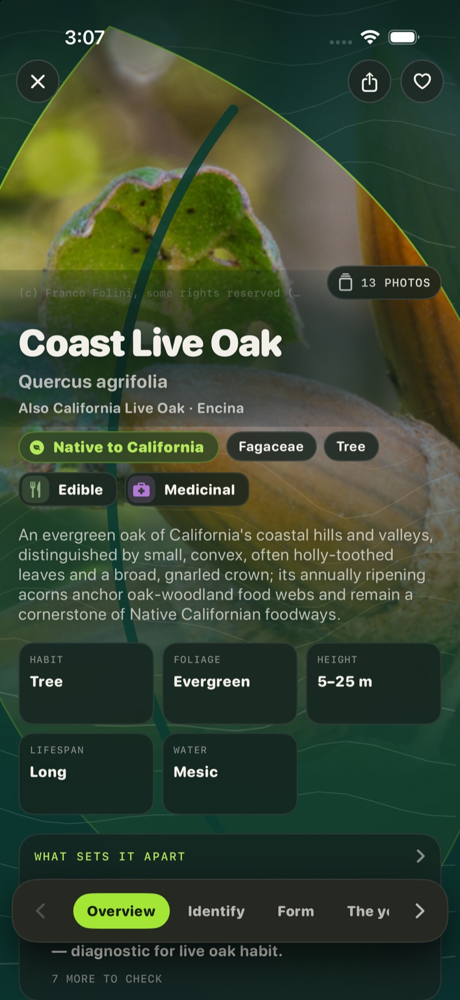
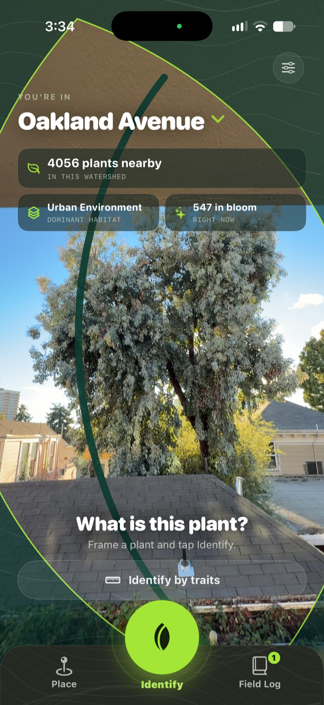
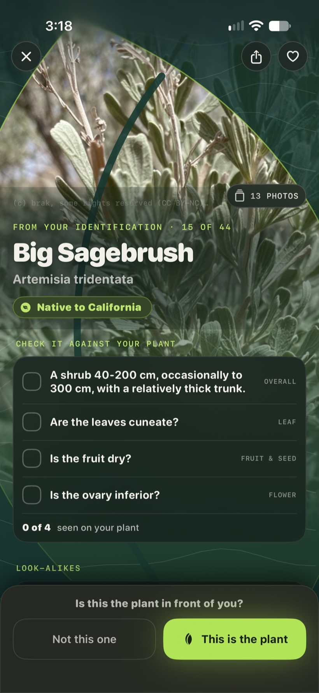
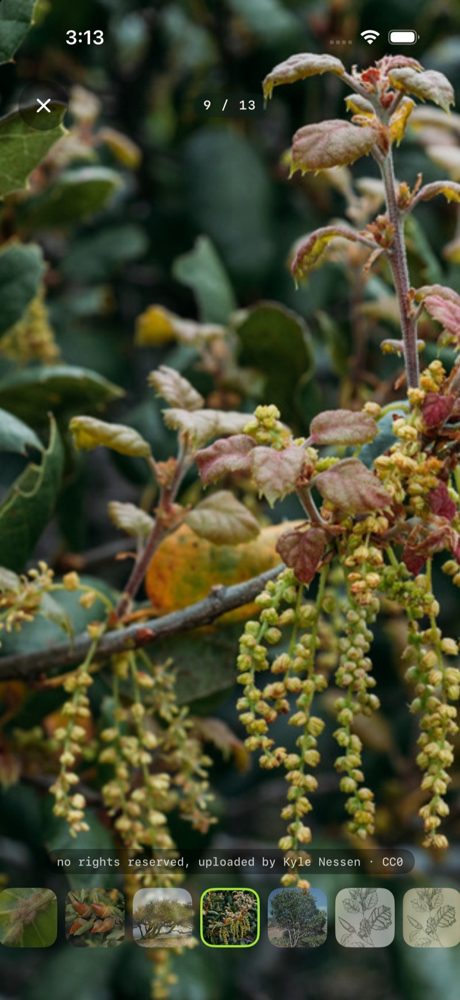
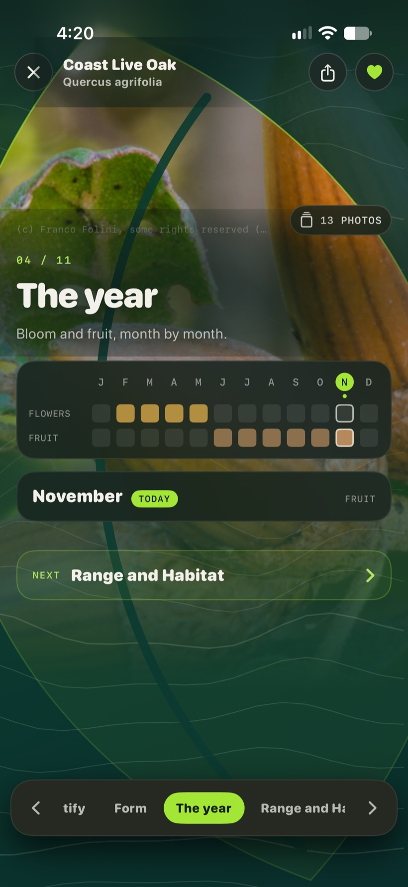
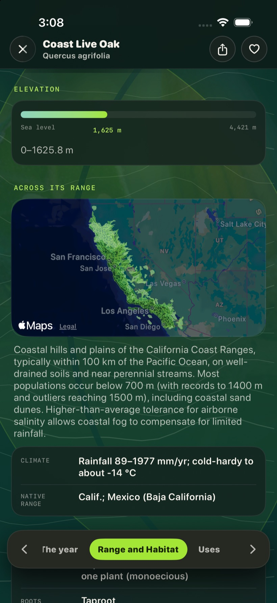
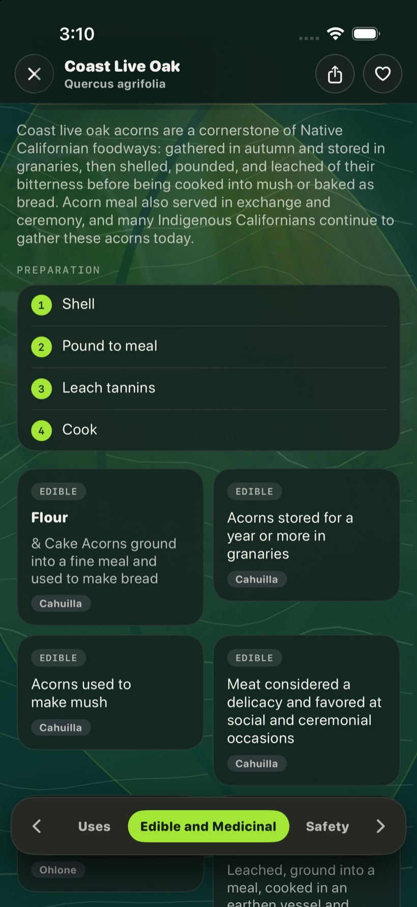
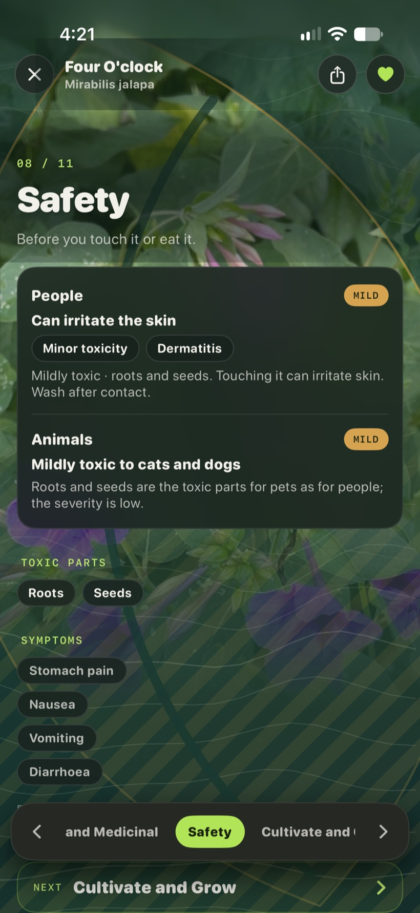
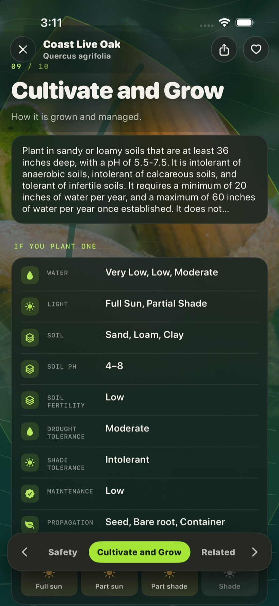
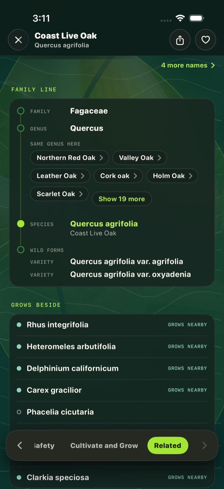

The plant at a glance
Photos, its names, whether it's native, and badges for edible, medicinal, invasive or toxic. A short description, quick facts such as height and lifespan, and what sets it apart.
Point your camera at a plant. Leaf scans the plant and matches it to a species or a genus, then asks you to observe the identifying characteristics of the plant. When you've made the call, plants open into a rich profile: plant traits, look-alikes to be aware of, what sets it apart, where it grows, how people have used it, how to stay safe around it, and how to grow it, and where you've seen it before.
Beta access requires an iPhone and being in California.

No account required and all your data stays local. You can opt-in to citizen science and share your plant observations with a global plant location database. The app does track usage anonymously to inform improvements.
Identifying plants and reading every profile is free, always. No ads, ever.
Identify as many plants as you like. No daily caps. No restrictions.
Built for trails and back roads. Leaf keeps working when network coverage is spotty. A list of local plants and their traits is already on your phone.
A photo can tell an oak from a pine. It often can't tell one oak from the next. Leaf matches the scan to one or more plants, then guides your own observations to land the identification.
Frame a plant in the leaf and tap Identify. Guide the frame as Leaf scans up to three snaps, from the whole plant to a close-up, zooming in on its own.
Leaf matches the photos to the plants that grow locally to where you are.


When the photos match a genus, Leaf says so and how many of its species grow nearby. Here it's a eucalyptus, with 21 kinds in the watershed; plant photos and guided observations help you land the identification.
Leaf guides you to look for the traits that make a candidate plant stand out. Is the plant growing out from standing water? Is the fruit an acorn? Each answer drops the plants that don't fit.
Each plant has an average of 5 photos that can also help you make a confident identification.


Open a candidate and check it against the plant before you: its size and habit, what sets it apart, its leaves, flower or fruit. Compare to photos and the plant's look-a-likes to be sure.
You decide. "This is the plant" saves it to your Field Log with the place and date; "Not this one" moves you to the next candidate.

Every identified plant opens into a rich, encyclopedic profile including range, growing conditions, traits and human uses including its foraging and medicinal potential. The pages are below.

Plants open into an encyclopedia of information. Over 12,500 California plants have a full profile today. Here are some pages for the Coast Live Oak.
Photos, its names, whether it's native, and badges for edible, medicinal, invasive or toxic. A short description, quick facts such as height and lifespan, and what sets it apart.

The nearby plants it's most often confused with, see what's different trait by trait: habit, leaf shape, margin, fruit timing, bark.

What defines this plant - all the characteristics it exhibits. Its leaves, flowers, fruit and seed, stem and bark. Leaf speaks in every day terms by default. Botanical terminology and hand-lens details siting behind an advanced toggle. And a full glossary fills in any gaps.

Where is the plant in its growth cycle throughout the year? See when it flowers and when it fruits.

A map of where this plant grows, the habitats it favors, its climate, and its native range. Also see what plants are known to grow alongside.

Its recorded uses beyond food or medicine, from firewood and timber to ceremony and games.

Time to forage? How is it prepared? What are some traditional medicinal uses that are recorded?

Whether it's toxic and how seriously, for people and for pets and livestock, which parts, and the signs of poisoning to recognize.

What does this plant need to thrive? Water, light, soil and pH, drought and shade tolerance, maintenance. See how it can be propagated and how to grow it.

The family line from family to siblings in its genus to its varieties, the relatives that grow near you, its other names.
A dozen or more photos of many plants. Tap to see the full screen gallery.
Leaf knows place you're in, the plants that grow nearby, the habitats and plant communities around you. Filter to see local natives, flowering plants, and foraging plants. Identification only considers plants known to grow where you are. Even discover how this land's first people found use of the plants found here.

Every trait and fact in Leaf traces to at least one of over 20 globally authoritative, peer-reviewed flora and open botanical institutions.
Over 12,500 California plants have full profiles today, with more added every week. Leaf has just about every plant you could encounter including natives, crops, houseplants and many landscape and garden cultivars.
Leaf improves through feedback from people using it. The only request is that you let me know how it could work better for you.
Beta requirements: iOS device. California locations only.